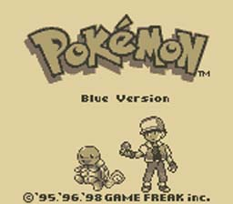
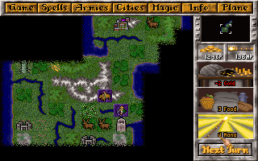
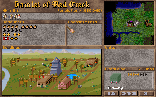
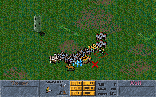
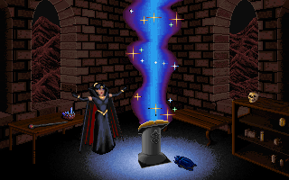
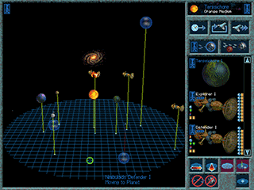
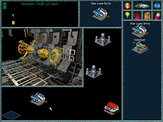
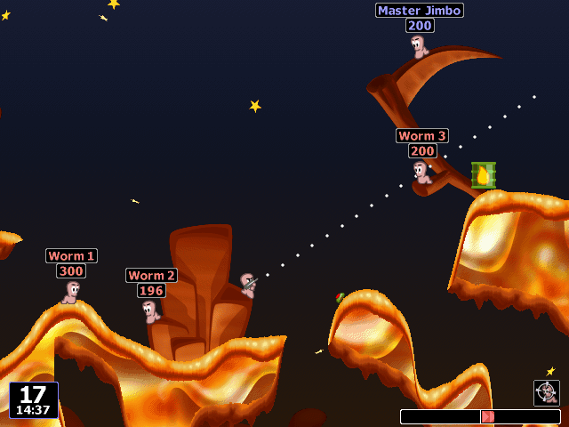

#15322 1 2007-05-22T10:40:34Z Olcadan 
Yeah, you know what's what. I'm sick and tired of 3D, Next-Gen, Super-Duper, Hyper-ZOMG, Games-Suck-Without-Cool-Graphics, I-Would-Certainly-Want-To-Get-Ass-Shagged-By-Hot-Grapics, I-Love-Hot-Graphics-With-My-Pee-Pee, graphics fanboys. Since reasoning with them seems to no avail, I have no choice but to become a 2D fanboy in response.
So here be old games. You hear?! Old games. With old graphics. And wouldn't you know it, kick-ass gameplay. Post your favorite 2D game, and celebrate.
#323290 2 2007-05-22T12:46:41Z apg  Jetpack
Jetpack was one of the first games I've ever played. As the name says, the game's catch is a realistically modeled jetpack, which is essential in order to finish the game. The jetpack consumes a lot of fuel, and you can recharge it using fuel tanks or a recharger.
Jetpack has 100 well-balanced levels, which you must complete using only 5 lives. The objective of each level is to collect all gems to open the exit and move on into the next one. Various enemies and traps are naturally there to prevent you from doing so. Completing the game is very rewarding, if you just have the patience to get out of the dungeon without losing.
Best of all, Jetpack comes with a very versatile level editor, and I still occasionally make new maps with it. Thousands of user-made levels are downloadable on the web, and a few hundred come with the game.
Jetpack is officially available as freeware now, and works well with DOSBox. It's worth a try even after 14 years. Jetpack is a good example how a game doesn't necessarily need realistic graphics or an epic storyline to be addictive. Come to think of it, N somehow resembles Jetpack quite a bit.
#323297 3 2007-05-22T15:19:55Z AV_Ultima I love both 3D and 2D. But it has to have some good graphics, or it just makes my eyes hurt.

I would have to say zelda. Oracle of time/season was my fave.

The newer ones have just gotton to easy.

#323303 4 2007-05-22T16:03:18Z Chase  Sonic the Hedgehog
Sonic the Hedgehog
The invincible tune is still stuck in my head! I love it, and still havent beaten the final boss without the level select cheat!

Thank goodness for the Wii's Virtual Console eh?
#323305 5 2007-05-22T16:11:52Z Spawn of Yanni Well sure, there are plenty of games that come to mind when you say 2D...of the top of my head, Liero would be one. But if we're going old school...
I cannot believe no one has brought up...

I mean, come on. For. The. Win. With THE best theme song any game has ever had. I even learnt how to play it on guitar
.
#323311 6 2007-05-22T16:59:40Z AV_Ultima Well, after the mention of sonic and mario. I just cant choose my fave. Hell, there all good.
#323321 7 2007-05-22T18:06:25Z Tsukatu nethack
#323329 8 2007-05-22T19:30:42Z smort Kid Icarus.
Unique gameplay. Original enimies. The difficulty is perfect. The music sets the tone perfectly. Pit was supposed to look like a little angel kid, and he actually did. That was groundbreaking for the time. I still find this game fun.
#323331 9 2007-05-22T19:46:24Z Chase 
Pokemon Blue
Heh, my first major game that I wanted for my GB, it rocked my 7yr old world! When you first caught a Pidgey and when you beat the Elite Four for the first time. Just amazing! Which leads to another favourite!
Pokemon Silver
I loved this nearly as much as Blue, because it was bigger and better! The colour was just a start, but having all new Pokemon, a massive 16 Gym Leaders, 8 back in Kanto (Looking better than ever!) and the Time feature, with the world being plunged into darkness at 7pm! Truly a great classic handheld game!
#323403 10 2007-05-22T23:51:48Z Keron Cyst All 2D, pixelated graphics:
HERO by Brad Miller (1999), a tile-based, sprite-based, turn-based, top-down RPG with randomization to the max.
Liero by Joosa Riekinnen (1999), the
best (and most modifiable, even to-date) 2D deathmatch ever
Lode Runner: The Mad Monks' Revenge (don't remember year), the first game I distinctly remember ever playing. So awesome (you can actually dl. it from one of the creator's websites for free... I lost the link, and the file was too big to upload to my filehoster tho')
@apg:
N somehow resembles
Jetpack quite a bit, you mean

A Liero self-modified HELL RAIDER (the blood is pixels! Look at those worm guts):
Attachment (lost): post-27-1179878095.png
#323588 11 2007-05-23T18:47:53Z Adam77 I would have to say Prince of Persia for the mac/pc. Great gameplay and graphics for the mac were awesome in 2d.
By the way, when I saw the Mario post, I thought of the theme music and the words that used to go along with it in my head. "step right up, and up again, come on every one lets go do the Mario" ...........can't you here it???????
#323606 12 2007-05-23T19:55:58Z Exüberance
Jetpack was one of the first games I've ever played. As the name says, the game's catch is a realistically modeled jetpack, which is essential in order to finish the game. The jetpack consumes a lot of fuel, and you can recharge it using fuel tanks or a recharger.
Jetpack has 100 well-balanced levels, which you must complete using only 5 lives. The objective of each level is to collect all gems to open the exit and move on into the next one. Various enemies and traps are naturally there to prevent you from doing so. Completing the game is very rewarding, if you just have the patience to get out of the dungeon without losing.
Best of all, Jetpack comes with a very versatile level editor, and I still occasionally make new maps with it. Thousands of user-made levels are downloadable on the web, and a few hundred come with the game.
Jetpack is officially available as freeware now, and works well with DOSBox. It's worth a try even after 14 years. Jetpack is a good example how a game doesn't necessarily need realistic graphics or an epic storyline to be addictive. Come to think of it, N somehow resembles Jetpack quite a bit.
I remember playing that. It's fun for such an old game.
#323616 13 2007-05-23T20:27:37Z CDotLeach 
Streets Of Rage
This is one of
my favourite 2D games, along with Sonic, Golden Axe, Mario, and...
POKEMON!!!!!!! FTW ATW OMG!!!!!!!! POKEBLUEEEEE!!!!!!!


Brings me joy every time i think about it... Love it, gonna find my copy of pokemon red... catch pidgey, rattata, all the legends and get to the Elite Four

...
#323635 14 2007-05-23T21:14:04Z Django Kirby, Super Mario, and Zelda FTW.
#323672 15 2007-05-23T22:41:12Z Psycho_CO 
Castlevania FTW!!!
#323675 16 2007-05-23T22:46:03Z Yahoozy #323744 17 2007-05-24T02:24:18Z Tsukatu Master of Magic (1995)




This game
was my childhood.
...that and
Ascendancy (also 1995).




Yeah... once you start playing those games, you don't really ever stop. I still play a game of Master of Magic every now and again, as well as the very occasional game of Ascendancy (Chamachies pwn all).
#323826 18 2007-05-24T12:05:01Z iangb 
Zac McKraken And The Alien Mindbenders
Point 'n' click puzzle adventures FTW. Maniac Mansion, Indiana Jones and the Holy Grail, Loom, Monkey Island... ah, good times.
#323949 19 2007-05-25T00:05:40Z Olcadan person below me is false do not believe him
#323950 20 2007-05-25T00:06:31Z Lexip took me a while to figure it out but i have found out who you are olcadan, even when yo were posting in this forum right next to me i didnt relise......im so stupid.
in the real world olcadan is right next to me......right now.....
#324009 21 2007-05-25T01:50:31Z Agent 001/7 
No best 2D games thread is complete without Super Mario World. I've gotten the game unto sheer perfection. All level exits, all dragon coins, EVERYTHING. Awwwweeeeessssssooooooommmmmmmmme.........

#324055 22 2007-05-25T04:23:50Z Tsukatu took me a while to figure it out but i have found out who you are olcadan, even when yo were posting in this forum right next to me i didnt relise......im so stupid.
in the real world olcadan is right next to me......right now.....
And using the same IP, even. It's almost as though Olcadan logged off and signed in again as Lexip, posted, then logged off of Lexip and back onto Olcadan to make an edit.
#324060 23 2007-05-25T04:45:22Z Romaniac Wolfenstein 3D Episodes 1 to 6. Has anyone ever played this? I was hooked, going round shooting up everything with people being like 10 or so dots in the distance, I still havent completed episode 6 level 7 (in the hardest difficulty), its impossible, way way too many people, plus TWO mazes full of people, and a third overgrown by some weird fungus (this thing is one of the few things I am afraid of), full of some really strong enemies. so yeah...

Prince of Persia was great for me also, loved completing that, and also I found a demo version called Prince4d, its really frickin hard, but only for 4 levels, level 7 is the original prince game
#324065 24 2007-05-25T05:34:28Z Olcadan And using the same IP, even. It's almost as though Olcadan logged off and signed in again as Lexip, posted, then logged off of Lexip and back onto Olcadan to make an edit.
We know each other in real life, we were posting here in school, i was on a comp right next to lexip.
#324070 25 2007-05-25T07:03:14Z Kablizzy Wolfenstein 3D...

...*Looks at topic title*

... *Looks at topic title again*
Anyway, I found this rather funny.
#324078 26 2007-05-25T07:33:43Z Spawn of Yanni Wolfenstein 3D...
...*Looks at topic title*
... *Looks at topic title again*
Anyway, I found this rather funny.
Damnit! I wanted to call him on that! Ah well. Anyway, I love point and click games, I should add. Even if it's a random one I found on the net, it's still good.
#324099 27 2007-05-25T11:21:46Z Luminaflare Doom/doom2
#324120 28 2007-05-25T12:56:05Z iangb Doom/doom2
Quote: Topic Title
2D Appreciation thread
I found another memory...
Rick Dangerous.

RD1 has even been
remade in flash. Awesome.
#324151 29 2007-05-25T16:06:48Z Rincewind SW
Sonic the Hedgehog
The invincible tune is still stuck in my head! I love it, and still havent beaten the final boss without the level select cheat!
HELL YES, I beat Sonic. Although I'd have killed for a save function.
Myst, my favourite game series, is arguably 2D. You see 2D images from a first-person perspective of a 3D world in the first game, but the graphics progress with the series. It's hard to tell whether it's really 2D or 3D, and it definitely changes at some point in the series, probably Myst IV.
And don't forget Metanet favourites like Soldat, Worms Armageddon, Within a Deep Forest, and Lemmings.... well, everyone loves Lemmings. All the classics are 2D.
#324249 30 2007-05-25T22:40:44Z Agent 001/7 Mega Man and Metroid definitely come in next. 2D platformers/shooters were awesome.
#324251 31 2007-05-25T22:45:35Z Luminaflare Doom/doom2
Quote: Topic Title
2D Appreciation thread
I found another memory... Rick Dangerous.
RD1 has even been remade in flash. Awesome.
It is 2D it's just sprites (i consider 3D being actual models and textures rather than sprites)
#324290 32 2007-05-26T02:12:03Z iangb Surely a 2D game is a game with only 2 dimensions? Unlike any FPS, which are all automatically 3D.
#324309 33 2007-05-26T04:25:14Z Electrical-Hazard
No best 2D games thread is complete without Super Mario World. I've gotten the game unto sheer perfection. All level exits, all dragon coins, EVERYTHING. Awwwweeeeessssssooooooommmmmmmmme.........
QFE FTW.
I only got to 99% though...
#324330 34 2007-05-26T07:50:59Z Agent 001/7 LOL Burninated!!! Well, I'll need some time to think of another game.
And I thought about it.
YOSHI'S ISLAND!!! Sweeeeeeeetness.
#324339 35 2007-05-26T08:51:35Z Atilla Psycho Fox (Master System) was good. And a little obscure. And it had a bizarre name. So I thought I'd mention it. I mean, how could you not love it, with a name like that?
EDIT: Pocky & Rocky (aka Kikikaikai) was also a really good and somewhat obscure game.
#324427 36 2007-05-26T18:04:04Z Sgt. Poptarts 
Cave Story. Sure, it's not an old game, but I love it quite alot...now I just need to redownload it...
#324430 37 2007-05-26T18:20:16Z Evil Bob Cavestory is great. Sos is withing a deep forest (I

that one).
Metroid Prime three is one of the best though.
#324528 38 2007-05-27T01:59:33Z Atilla Why is it that people cannot understand the meaning of 2D?
Super Metroid is one of the best 2D games.
#324530 39 2007-05-27T02:04:15Z beginner2 Oh, surely, no one forgot about these good sidescrollers:
Duke Nukem 1, Duke Nukem 2, Soldat


Attachment (lost): post-27-1180231573.png
#324531 40 2007-05-27T02:07:56Z smort ah, yes, the unforgettable , , and .
How could we forget those?
#324721 41 2007-05-27T20:28:06Z Tsukatu Why is it that people cannot understand the meaning of 2D?
I can move my mouse up/down and left/right.
I can't move it
into the screen.
#324728 42 2007-05-27T20:44:48Z Exüberance Why is it that people cannot understand the meaning of 2D?
I can move my mouse up/down and left/right.
I can't move it into the screen.

I take 2D to mean you can move in 2 dimentions. Overhead games are still 2D.
#324732 43 2007-05-27T20:55:31Z bonzai Donkey Kong Country series, FTW!!! My personal favorite was #2. I think it's still a lot better than many 3d games today.
#324795 44 2007-05-28T00:11:46Z Atilla Why is it that people cannot understand the meaning of 2D?
I can move my mouse up/down and left/right.
I can't move it into the screen.
1. Metroid Prime does not use a mouse.
2. Regardless of how you can move the mouse, objects within the game have an x, y and z position. That is more than two dimensions.
3. If you're going to make silly arguments about the control mechanism, I'm going to insist that to describe the state of the system, you need to specify the X/Y position of the mouse, the position/movement of the mouse wheel, which of the three mouse buttons are pressed, and which keys are being pressed. Therefore, all computer games in fact have about 50 dimensions.
#324867 45 2007-05-28T03:34:40Z Tsukatu Atilla:
How 'bout this:
The controls for 2-dimensional games are two-dimensional; Metroid has directional keys that take you up/down and left/right. There are no other directional controls. There are controls for actions, such as "shoot," but there are no other directional controls.
Similarly, a game like CounterStrike is controlled by the mouse, which, I don't know if you've noticed, has a 2-dimensional surface to move around on, and controls the same movements as the controls of Metroid: up/down and left/right. You can't lift the mouse off the mousepad or press down through it. There are also buttons in Counterstrike that perform actions, such as "shoot" and "take a step forward." (It is at this point that you may begin bashing your head into the nearest wall. I'll wait.)
Before you say it, I know this will be your argument:
"'Take a step forward' is a directional control!"
And to rebut, I give you a reducto ad absurdum:
Metroid is a 2D game, right? Metroid has the directional controls (up/down and left/right; only two directional controls means 2D) as well as controls for actions such as "shoot" and "roll." But wait - "roll" is clearly movement! In Metroid, you can roll left and roll right, which would mean by your ridiculous logic that Metroid is a 3-dimensional game! And wait, how 'bout "jump?" There's another "moving" action! Is Metroid now 4-dimensional? Clearly that's false, as you'd be arguing with your own reasoning.
To conclude this post, I'd like to recommend the following 2D games:
3D Deathchase
3D Lemmings
3D Maze Man: Amazing Adventures
3D Monster Maze
Alien vs Predator 3D
Avalon the 3D Adventure Movie
Catacomb 3D
Duke Nukem 3D
Frogger 3D
Hovertank 3D
Iridion 3D
Prince of Persia 3D
Red Baron 3D
Scorched 3D
Sonic 3D Blast
Wolfenstein 3D
#324877 46 2007-05-28T04:16:08Z Olcadan Who the hell do you think your are Tsukatu?
How dare you ruin the 2D appreciation thread with names of such 3D games in your post.

EDIT: Crap, i just relised that you were a mod.
#324888 47 2007-05-28T05:43:16Z Gforce20 Who the hell do you think your are Tsukatu?
How dare you ruin the 2D appreciation thread with names of such 3D games in your post.
EDIT: Crap, i just relised that you were a mod.

;;; Real smooth.
I absolutely love 2D. The first Mario Bros. games were two-dimensional. And they were what started me up with video games.
#324897 48 2007-05-28T06:36:20Z Kablizzy Who died and made you a mod?
And, for those who didn't quite catch it, Suki was making a point by suggesting those games.
#325051 49 2007-05-28T20:23:43Z CDotLeach I found this game lying around in my house and started playing it again...

Played for a few hours
Ate, played some more
(Faaat) Ate some more and played just an hour or so more
Yay...!

#325175 50 2007-05-29T01:32:09Z Atilla Well, Tsukatu, the thing is, you have to understand God's Plan for videogames. Some games might seem 2D to idiots. On the surface this is true, but this is not the fundamental truth. The fundamental truth goes beyond that. For example, in your limited thinking you believe a mouse can only be moved in two dimensions. However, once you lift free of the constraints of your own thoughts, you realise that you can actually lift the mouse off the table/pad/whatever, thus moving it in three dimensions. The truly gifted also realise that the mouse is constantly moving through time, thus adding a fourth dimension.
Now, before you say it, I know this will be your argument:
"But that can't be true because I, Tsukatu, am the offspring of a teapot an a spavined goat."
And to rebut, I give a pro bono publico:
Teapots are incapable of sexual reproduction, especially with spavined goats, and you are therefore mistaken and silly also.
Therefore, I am right, and you are wrong. Quod erat demonstrandum.
It's true that Wolfenstein 3D isn't. Objects only had positions on a 2D plane; you couldn't look or move up or down. I'm pretty sure some of those other games he posted are actually 3D, though.
#325214 51 2007-05-29T03:40:20Z Tsukatu Atilla:
I sort of skimmed most of your post because it was incoherent, repetitive nonsense, but I will point out that you're forgetting a very important fact: I'm actually the child of a spavined goat and a teapot; dī te ūrant, computer mice are incapable of existing in more than one dimension at one time; a recent scientific journal on quantum mechanics was published by God Himself that proves that the mouse merely flickers between the dimensions in which it exists at the rate of 1 dimension change per Planck time; semicolons make me look smart.
I thought games like Wolfenstein 3D and Doom were considered "two-and-a-half-D" because, although elevation could change, all floors had to be infinitely deep (no roving around on multiple floors).
#325228 52 2007-05-29T04:26:44Z DemonzLunchBreak Street fighters two for the Sega Genesis!

And Streets of Rage 3! (also for the Genesis!)

#325260 53 2007-05-29T07:38:53Z Atilla Tsukatu: Your so-called "scientific report" is, de facto merely another hoax perpetrated by ignorant antitheists of the corpus delicti. And semicolons are prima facie the Work of Satan, quis custodiet ipsos custodes.
I guess you could call Doom and Wolfenstein "two-and-a-half-D". I was thinking of Lemmings 3D. If I remember correctly, it had platforms which went above and beneath each other, making it fully 3D. I could be mistaken, though.
Also, Streets of Rage 2 is far, far superior to Streets of Rage 3.
#325288 54 2007-05-29T10:54:59Z CDotLeach @ The whole Atilla and Tsuki thing:
...
...Btw I agree with Tsukatu...
#325321 55 2007-05-29T12:50:17Z iangb Guys! Aren't we all forgetting the dimension of fun?
It's true that, in wolf3d at least, there was never any height change - the map was width and depth only. But the objects in wolf3d had a different two dimensions - height and width (sprites, no depth). So all three dimension were included, just not all at once. And Doom certainly made height differences an issue, as anone who's fallen into that strange green stuff and been unable to find the secret way out will tell you.
#325398 56 2007-05-29T18:06:54Z Tsukatu Atilla: Your suspicious concern of evil supernatural entities influencing science and geometry has,
Caecilius est pater, betrayed the naive, superstitious Atilla you are trying to hide away from us,
caveat emptor. Looking back,
utilem habere, at your arguments from the supernatural (admittedly
cur vacitat senex), it is obvious,
es ebri mendax, that commas, even when used appropriately, as they are here, when inserting, like, forty clauses, indiscriminately, into a single, independent clause, especially when unnecessary, ordered lists add commas to irritate further, distract, rather annoyingly, the reader, who is probably aware of such ridiculous complications, as well as the author, meaning, in this case, myself, who has now thoroughly, and possibly completely, has made him, in this case, me, forget the original purpose of this sentence,
mihi pecuniam numerandum est.
Doom also had two-dimensional sprites.
As for Lemmings 3D, it certainly looked 3D to me:
http://eur.i1.yimg.com/eur.yimg.com/xp/gam...en002_thumb.jpg
http://eur.i1.yimg.com/eur.yimg.com/xp/gam...en003_thumb.jpg#325636 57 2007-05-30T07:59:19Z Atilla Fabricati diem, pvnc. Ipso facto the vis comica of your ad libitum is the mens reus. If we examine the homo habilis in detail it reveals a posteriori the truth of ad maiorem Dei gloriam. Further inquiry into the profoundus maximus shows ad hoc that the principle of infectius virus is violated by your argument due to the conflict between the stercus accidit and the deus ex machina.
Now, status quo ante bellum.
Ian, you could make the argument that objects in Doom need only be described by two spatial dimensions because the third is determined entirely by which region of floor they are standing on. However, since height is nevertheless a factor, I'm leaning towards calling it true 3D.
Did Doom have flying enemies also, or am I thinking of Heretic?
#325638 58 2007-05-30T08:06:19Z Kablizzy MAN YOU GUYS ARE SILLY. BACK IN THE DAY, IT WAS ALL ABOUT THE NEGATIVE 7 TEXT. BOY, THOSE WERE THE DAYS. MOST PEOPLE STILL DON'T KNOW ABOUT THE POST-A-PICTURE THREAD THING THAT WENT DOWN BETWEEN SUKI AND I. OH WELL.
#325668 59 2007-05-30T12:42:28Z Tsukatu MAN YOU GUYS ARE SILLY. BACK IN THE DAY, IT WAS ALL ABOUT THE NEGATIVE 7 TEXT. BOY, THOSE WERE THE DAYS. MOST PEOPLE STILL DON'T KNOW ABOUT THE POST-A-PICTURE THREAD THING THAT WENT DOWN BETWEEN SUKI AND I. OH WELL.
...which is now mostly censored so it could be placed in Images.
#325706 60 2007-05-30T16:27:13Z iangb I knw about it! It is kinda obvious. What you want is
tiny AND invisible.
This is easier to read, anyway. Plus you can write your own edit lines
More games! There's allways the legendary
Kings Quest - which was... of indeterminate dimensions. It was legendary, anyway.

This post was edited by
Your Mom while you were sleeping.
#326534 61 2007-06-02T12:38:42Z faemir 
angband ^ (for anything (i mean it: dos,linux,mac,solaris,windows,ds,psp etc))

xargon ^ (msdos(woo for floppy disc games))

electroman ^ (msdos)
and many many more :3
#326584 62 2007-06-02T15:13:03Z Luminaflare This thread needs to be pinned we should embrace our pixeled past
*pins*
#326585 63 2007-06-02T15:13:22Z Ravenclaw my favorite? that's hard to answer, i'm totally retro(got a nes, snes, genesis, atari 2600), erm, maybe road rash or doom, but zelda and mario own too, and of course sonic.
#327119 64 2007-06-03T22:10:00Z Thomas Commander Keen!

One of the best games ever!
#327290 65 2007-06-04T09:11:16Z iangb Xargon and Electroman were both awesome. Did you ever play Xargon's predecessor - Jill of the Jungle? It wasn't as good, but still rather fun.

#327292 66 2007-06-04T09:13:23Z Spawn of Yanni 
Bomberman. Roar.
#327298 67 2007-06-04T10:17:16Z Luminaflare Image hosted by tripod? didn't know that was a game

#327303 68 2007-06-04T10:24:26Z Spawn of Yanni You can't see the image? o_O That's weird. I can.
Take 2: Bomberman. Roar.
Attachment (lost): post-27-1180952666.jpg
#332228 69 2007-06-17T18:32:11Z Mr__X Earthworm Jim is a great game, and a classic. It had great graphics, tight controls, and was a creative, imaginative, very fun game. I have the second for the SNES, and I love it. Anyone here played it?

#332502 70 2007-06-18T08:42:34Z CDotLeach Earthworm Jim is a great game, and a classic. It had great graphics, tight controls, and was a creative, imaginative, very fun game. I have the second for the SNES, and I love it. Anyone here played it?
Is that an image of 'user posted image'?
#332503 71 2007-06-18T08:45:17Z Spawn of Yanni Mmm, I can't see the image, but I literally loved that game. Heck, you just made me want to play it right now.
#332507 72 2007-06-18T09:05:51Z CDotLeach Ahh, I right-clicked the text and it gave me a choice to view the image.
#332508 73 2007-06-18T09:14:26Z Olcadan 
Anyone remember this good old game? It was pretty fun back then.
#332994 74 2007-06-19T12:35:14Z Chase Haha, Duck Hunt pwns!
I like some of the more recent 2D games too...
Super Mario World ftw though
#334323 75 2007-06-22T05:14:20Z Muzgrob I loved the game Alex the Kid.
I miss that game, if only I could find it.

#334897 76 2007-06-23T15:12:39Z the GAMEGOBLIN Nobody mentioned the greatest gem of all time...

Another World/Out of this World/Outer world FTW! Truly amazing game. I like this genre because it works well with the 2d perspective. Prince of Persia classic on xb360 makes me hate 3d
Other faves:
Flashback

Blackthorne

(They remade Blackthorne for the GBA if your interested.)
#336102 77 2007-06-27T00:09:23Z Romaniac Xargon and Electroman were both awesome. Did you ever play Xargon's predecessor - Jill of the Jungle? It wasn't as good, but still rather fun.
Yeah, I got that at home, its on a B drive disc like 5 inch floppy...
alright game though
#336126 78 2007-06-27T01:35:07Z iangb Earthworm Jim is a great game, and a classic. It had great graphics, tight controls, and was a creative, imaginative, very fun game. I have the second for the SNES, and I love it. Anyone here played it?
I have 1 and 2 on emulators... both are legendary. Gotta love Jim. (also, the TV version is absurdist humour supreme).
#336134 79 2007-06-27T01:49:08Z Sniperwhere Pac-Man, Tetris, Pong, Marble Madness, Final Fantasy Adventures, and all those golden oldies I forgot to mention.
#336310 80 2007-06-27T16:24:37Z Chase Marble Madness
I shall correct thee! Unless it was named differently in the US...
#336747 81 2007-06-28T23:35:18Z Sniperwhere Marble Madness
I shall correct thee! Unless it was named differently in the US...
You're right. I just confused it with a different version I saw elsewhere.
#337027 82 2007-06-29T20:33:05Z Orange-Subs Ninja Five-0 for the gba (It's Like Bionic Commando meets Shinobi)

#337322 83 2007-06-30T23:21:52Z Sniperwhere One game I was really addicted to but sounds lame is a game for Sega Genesis. Its about Vikings that got abducted by aliens. Yes, it sounds lame but it was actually really fun.
#337324 84 2007-06-30T23:27:16Z smort : o
DON'T YOU DARE EVER SAY THAT GAME EVEN SOUNDS LAME!
If I'm not mistaken, wasn't it Lost Vikings or Little Vikings or something? That game is my entire childhood.
#337326 85 2007-06-30T23:33:45Z Sniperwhere : o
DON'T YOU DARE EVER SAY THAT GAME EVEN SOUNDS LAME!
If I'm not mistaken, wasn't it Lost Vikings or Little Vikings or something? That game is my entire childhood.
Mine to. I screamed when the Sega broke while playing that game. But yeah, that was a great game.
#337385 86 2007-07-01T02:51:23Z Atilla : o
DON'T YOU DARE EVER SAY THAT GAME EVEN SOUNDS LAME!
If I'm not mistaken, wasn't it Lost Vikings or Little Vikings or something? That game is my entire childhood.
The Lost Vikings. It was on the SNES, too. And it was awesome. How could you not love it, when the villain was called Tomator?
#337528 87 2007-07-01T18:25:51Z Animator 
Vectorman and it's sequel.
Just awesome.
#337606 88 2007-07-01T20:52:44Z Sniperwhere How could you not love it?
In what part did I say I didn't like it??? I loved that game and played it everyday. When the Sega broke I screamed. I only said my description of the game sounded a little weird.
#337842 89 2007-07-02T11:30:58Z Atilla That was not directed at you. It was a general, rhetorical question, implying that everyone should love it.
#337893 90 2007-07-02T15:52:08Z scythe33 Megaman X1-X4 were ftw.
After that, the series got dumb.
BTW-does SSB count as 2D? If so, then that's on the list too, plus every old Mario game except SMB2, plus-hey, do old Final Fantasy games count as 2D? You moved on a plane, but the graphics didn't really have perspective in them.
#337900 91 2007-07-02T16:02:13Z Tk_ArtS Super mario bros. good old days...

#338017 92 2007-07-02T21:10:51Z Sniperwhere Super mario bros. good old days...

#338339 93 2007-07-03T12:56:14Z faemir Ah, i have 2 weeks with a G4 and the best widget ever is the zx spectrum one.
good old chuckie egg

#347583 94 2007-07-26T11:57:31Z mr_pac PACMAN FTW!!!!!!!
#347670 95 2007-07-26T17:08:59Z 7! Sonic the Hedgehog 1-3. Awesome games.
SMB1-3, SMW 1-2.
Maniac Mansion and Day of the Tentacle.
NHL94.

#347741 96 2007-07-26T21:37:38Z Ad Sonic 3 & Knuckles!


It had it all:
Double Crosses,
Snowboarding,
Infinite Loops,
Super Chaos Emeralds,
Bosses on every level,
Knuckles,
Dr. Robotnik,
3D Effect Special Stages,
Mecha Sonic,
Super Mecha Sonic,
Collapsing towers in the sky,
Mummies and Ghosts,
Antigravity,
and Casinos!
#348693 97 2007-07-29T20:11:11Z Sniperwhere Lost Vikings.


#348704 98 2007-07-29T20:36:21Z Chase Sonic 3 & Knuckles!
Too easy, had save files >_>
#350388 99 2007-08-02T21:36:38Z M_Sabata My Favorite: Raystorm


Raycrisis is also good.
#351663 100 2007-08-05T18:25:55Z spoon 
This game is totally awesome. I'm surprised no ones posted this yet...
Also, sorry if the pic is a little small.
#356519 101 2007-08-17T21:35:15Z smort Bionic Commando operates on so many levels of awesome. It's the closest you can get to Robotology.
#358086 102 2007-08-22T01:04:50Z spoon Maplestory is a fun (free) MMORPG, and quite a few peopel here play it
#360371 103 2007-08-28T18:05:43Z T3chno Pokemon Blue FTW! That had to be the best of the pokemon games...
#360382 104 2007-08-28T19:31:23Z Thomas Woot! Galaga FTW!
#360394 105 2007-08-28T20:13:10Z shoftee Nobody?
No-effing-body?
Man, guys, I'm disappointed.
Really, really disappointed.

#362567 106 2007-09-06T01:37:53Z Question¿Mark Golden sun 1 and 2, Megaman, CAvestory, Mario, Super Mario World, Myst, Zelda, Knytt, WADF,Pokemon, Maplestory, DeathWorm, I could go on, But I don't want to.....
#363857 107 2007-09-10T03:46:56Z 15_ Super Smash Bros for N64 is my favourite 2D.
#363902 108 2007-09-10T09:04:54Z Chase Super Smash Bros for N64 is my favourite 2D.
Stop being sarcastic...
Anyway. Did I mention Worms Armageddon?

#456007 109 2008-07-30T03:19:50Z bobaganuesh_2 raise this dead article now.
Drive By 2. An online game that simulates a drive-by shooting. It's pretty fun.
World Domination Battle. Where all of the world's political figures come together and unleash their self-stereotypes.
Fishy. The classic eat-the-smaller-fish-but-avaoid-the-big-fish-at-all-costs game.
Year of the Snake. The best side-scrolling monster fighting game that's not for a console I've played in ages.
And of course, who can forget
Stick Arena. Not the cleanest out there, but it's still fun to play.
#456016 110 2008-07-30T03:40:47Z PNI 
Any Guesses?
#456032 111 2008-07-30T04:38:58Z Corvinex I don't know about that.
HHAH remember tamagotchi, and all those other pet games.
#456033 112 2008-07-30T04:45:41Z Arona Daal This deserved to be brought back to life.
Megaman Series
Terranigma
Earthbound
R-Type
Zombies ate my Neighbors
#458193 113 2008-08-04T17:06:54Z Agent 001/7 Kirby. Anything relatively Kirby related.. and New Super Mario Bros.